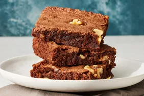

Home
Brownies

Description
Bake these easy brownies whenever you need to quickly satisfy your sweet tooth. Made with kitchen staples, you'll come back to this easy brownie recipe again and again.
Ingredients
- Sugar: These easy brownies start with two cups of white sugar.
- Flour: All-purpose flour creates structure in the batter.
- Butter: Two sticks of melted butter give the brownies moisture and richness.
- Eggs: Eggs lend even more moisture. Plus, they help bind the batter together.
- Cocoa Powder: Of course, you'll need cocoa powder for chocolate brownies!
- Vanilla: Vanilla extract enhances the overall flavor of the brownies.
- Baking Powder: Baking powder acts as a leavener, which means it helps the brownies rise.
- Salt: A pinch of salt enhances the flavors of the other ingredients.
- Walnuts: Nuts are optional, of course, but they add a welcome crunch.
Steps
- Gather all ingredients.
- Preheat the oven to 350 degrees F (175 degrees C). Grease a 9x13-inch pan.
- Mix sugar, flour, melted butter, eggs, cocoa powder, vanilla, baking powder, and salt in a large bowl until combined.
- Spread the batter into the prepared pan.
- Decorate with walnut halves.
- Bake in the preheated oven until top is dry and edges have started to pull away from the sides of the pan, about 20 to 30 minutes.
- Cool before slicing into squares. Enjoy!